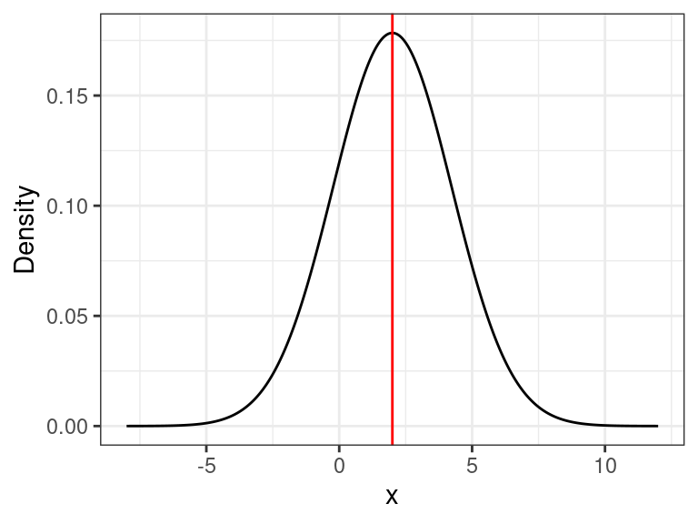

Discussion 1. Prob & Stats Review
STSCI/INFO/ILRST 3900: Causal Inference
August 27, 2025
To execute these simulations locally, download the .Rmd here
Announcements
- Office Hours throughout the week (see Syllabus or website)
- Filippo: Thursday 4-5pm in 321A Computing & Information Science Building
- Shira: Monday 5-6 pm in 329A Computing and Information Science Building
Probability and Statistics Review
- Expectation
- Variance
- Conditional Expectation
- Independence
- Bernoulli Random Variables
- Law of Total Expectation
- Confidence Intervals
- Regression (OLS, logistic)
1. Expectation
(Expected Value, Population Mean, Average)
- Notation: \(E(X), \mu\)
- The expected value of a finite random variable \[\mu=E(X) := \sum_{i=1}^N x_i P(x_i) \quad \text{where} \quad P(x_i):=\text{prob}(X=x_i)\]
- The expected value of a countable random variable, i.e. the (long run) average \[E(X):= \sum_{i=1}^\infty x_i P(x_i)\]
- For \(n\) independent and identically distributed (i.i.d.) random variables \(X_1,\ldots,X_N\) the sample mean is \[\bar X = \frac{1}{N}\sum_{i=1}^N X_i\]
- Law of Large Numbers (LLN): the sample mean converges to the expected value (population mean) as \(N \to \infty\)
- Example: \(X_i\) are random draws from \(\sim \mathcal{N}(2,5)\) (a Normal r.v. with mean 2, variance 5)
true_mean <- 2
true_var <- 5
x <- seq(-8, 12 , length=1000)
y <- dnorm(x, mean=true_mean, sd=sqrt(true_var))
ggplot() + geom_line(aes(x,y)) +
geom_vline(xintercept = true_mean, color = "red") +
theme_bw() +
labs(y="Density")
sample_seq <- 1:3000
means <- numeric(length(sample_seq))
vars <- numeric(length(sample_seq))
for(i in 1:length(sample_seq)){
n <- sample_seq[i]
data <- rnorm(n = n, mean = true_mean, sd = sqrt(true_var))
sample_mean <- mean(data)
sample_var <- sum((data - sample_mean)^2)/length(data)
means[i] <- sample_mean
vars[i] <- sample_var
}
means <- tibble("N" = sample_seq, "Sample Mean" = means)
vars <- tibble("N" = sample_seq, "Sample Variance" = vars)
colors <- c("Sample Mean" = "lightblue", "Population Mean" = "red")
ggplot(means, aes(y = `Sample Mean`, x = N)) +
geom_line(color = "lightblue") +
geom_abline(slope = 0, intercept = true_mean, color = "red") +
theme_bw()2. Variance
Describes the spread of the data
- Notation: \(V(X), Var(X),\sigma^2\)
- Variance is the average of the squared differences from the mean
- For a random variable \(X\) with expected value \(\mu:=E(X)\), the variance is \[\sigma^2 = Var(X) := E\Big[\big(X-\mu\big)^2\Big] = E\big[X^2\big] - \mu^2\] More explicitly \[Var(X) = \sum_{i=1}^n P(x_i)\cdot (x_i-\mu)^2 \quad \text{where} \quad P(x_i):=\text{prob}(X=x_i)\]
3. Sample (Empirical) Variance
For a finite dataset or finite sample
- In practice, you can compute the variance of a finite dataset as \[\sigma^2 = \Big(\frac{1}{N}\sum_{i=1}^N x_i^2\Big)-\bar{X}^2 \quad \text{where} \quad \bar{X} := \frac{1}{N}\sum_{i=1}^N x_i\]
- You don’t need to have the formula memorized, just be aware of it
- Likely you’ll never have to explicitly compute it this way, just use an R function
- Example: \(X_i\) are random draws from \(\sim \mathcal{N}(2,5)\) (a Normal r.v. with mean 2, variance 5)
ggplot(vars, aes(y = `Sample Variance`, x = N)) +
geom_line(color = "lightblue") +
geom_abline(slope = 0, intercept = true_var, color = "red") +
theme_bw()
4. Conditional Expectation
- Notation: \(E(X|Y)\)
- The expected value given a set of “conditions”
- Read as “the expectation of \(X\) given (or conditioned on) \(Y\)” \[E(X|Y) = \sum_{i=1}^n x_i \cdot P(X=x_i | Y) \quad \text{where} \quad P(X=x_i|Y) = \frac{P(X=x_i \text{ and } Y)}{P(Y)}\]
- Example: Roll a fair dice
- Let \(A=1\) if you roll an even number, \(0\) otherwise
- Let \(B=1\) if you roll a prime number, \(0\) otherwise
- Then \[E[A] = \sum_{i=1}^6 a_i\cdot P(a_i) = \frac{0+1+0+1+0+1}{6} = \frac{1}{2}\] and the conditional expectation of \(A\) given \(B=1\) (i.e. we rolled 2, 3, or 5) \[E[A | B=1]= \sum_{i=1}^3 a_i\cdot P(a_i|B=1) = \frac{1 + 0 + 0}{3}= \frac{1}{3}\]
- Visualization in R for \(E(X)=25\), \(E[X| \text{group 1}] = 20\), \(E[X| \text{group 2}] = 30\)

5. Independence
- Notation: \(\perp, \ X \perp Y\)
- Two random variables are independent if the outcome of one does not give any information about the outcome of the other
- Events \(A\) and \(B\) are independent if \(P(A \text{ and } B) =P(A \cap B) = P(A)P(B)\)
- Recall: \(P(A \cap B) = P(A | B)P(B)\)
- If \(A \perp B\) , then \(P(A|B)=P(A) \text{ and } P(B|A)=P(B)\)
- Example:
- Suppose you roll two fair dice. Let \(A\) be the value of the first dice and let \(B\) be the value of the second dice.
- If I say that \(A=3\), does that give you any info about what the value of \(B\) is?
- We can show that the events \(A=3\) and \(B=3\) are independent: \[\begin{align*} P(\{A=3\} \cap \{B=3\}) &= P(\{A=3\} | \{B=3\})\cdot P(\{B=3\}) \\ &= \frac{1}{6} \cdot \frac{1}{6} \\ &= P(\{A=3\}) \cdot P(\{B=3\}) \end{align*}\]
- To show \(A \perp B\), you would show this holds for all values of \(A\) and \(B\)
6. Bernoulli Random Variables
A binary/dichotomous random variable
- Notation: \(B(p), \text{Bernoulli}(p), \mathcal{B}(p)\)
- Takes the value \(1\) with probability (w.p.) \(p\), and the value \(0\) w.p. \(q:=1-p\)
- Let \(X \sim B(p)\):
- “Let \(X\) be a Bernoulli random variable with mean \(p\)”
- \(E(X) = p \text{ and } Var(X) = p(1-p) = pq\)
- Cool fact: \(E(X) = P(X=1) = p\)
8. Confidence Intervals
- A set of values that contains the real parameter with probability \(1-\alpha\)
- Define \(CI=[L,U]\) then \(P(L \leq \mu \leq U)= 1-\alpha\)
- Usually \(1-\alpha\) is \(95\%\) or \(99\%\)
- Example: \(X_i\) are random draws from \(\sim \mathcal{N}(2,5)\)
- Estimating expectation of a random variable using sample mean: \[\hat E(X)=\hat\mu= \bar X =\frac{1}{N}\sum_{i=1}^N X_i\]
- \(\bar X\) is an estimate for \(\mu\) with some uncertainty
- \(P(\mu \leq \bar X -c)=P(\mu \geq \bar X +c)=\frac{\alpha}{2}\)
- \(P\left(\frac{\bar X-\mu}{\sigma/\sqrt{N}}\leq \frac{\mu-c-\mu}{\sigma/\sqrt{N}}\right) \Rightarrow -c=Z_\frac{\alpha}{2}\frac{\sigma}{\sqrt{N}}\)
- \(Z_\frac{\alpha}{2}\) is the the critical value of the Normal distribution (For example in R: \(\texttt{qnorm(0.025)})\)
- \(CI= \bar X \pm Z_\frac{\alpha}{2} \frac{\sigma}{\sqrt{N}}\)

9. Regression
- Estimates the relationships between \(X\) and \(Y\) where
- \(Y\)- the dependent variable, outcome/response
- \(X\)- independent variable, regressor/explanatory
- Main types of regression: Linear and Logistic
9.1. Linear Regression
- Assume data was generated: \(Y_i=\alpha+\beta X_i+\varepsilon_i\) for \(i=1,\ldots,N\)
-
\(\alpha, \beta\) are the coefficients where \(\alpha\) is the intercept and \(\beta\) the slope
- Using ordinary least squares (OLS) to estimate \(\hat Y_i=\hat\alpha+\hat\beta X_i\)
- Minimizes sum of squared errors: \((\hat \alpha,\hat \beta)=\mathrm{argmin}_{a,b} \sum_{i=1}^N\big(Y_i-(a+bX_i)\big)^2\)
- \(\frac{\partial}{\partial a} SSE = \sum_{i=1}^N -2(Y_i-a-bX_i) \qquad \Rightarrow \qquad \hat \alpha=\bar Y-\hat \beta \bar X\)
- \(\frac{\partial}{\partial b} SSE = \sum_{i=1}^N -2(Y_i-(\bar Y-b\bar X) -bX_i)X_i\) \(\qquad \qquad = \sum_{i=1}^N -2\big[(Y_i-\bar Y)X_i-b(X_i-\bar X)X_i \big]\) \(\qquad\qquad\qquad \Rightarrow \hat \beta=\frac{\sum_{i=1}^N (Y_i-\bar Y)(X_i-\bar X)}{\sum_{i=1}^N (X_i-\bar X)^2}\)
9.2. Logistic Regression
- \(Y_i\)- the outcome variable is binary for \(i=1,\ldots,N\)
- Use a link function to estimate \(P(Y_i=1):=p_i\) that satisfies \(\mathbb{R} \to (0,1)\)
- Most common- logistic function: \(\sigma(t)=\frac{1}{1+e^{-t}}\)

- Most common- logistic function: \(\sigma(t)=\frac{1}{1+e^{-t}}\)
- In a linear model we estimate \(\hat Y_i=\hat\alpha+\hat\beta X_i\)
- In logistic model we estimate \(\hat p_i= \frac{1}{1+e^{-(\hat\alpha+\hat\beta X_i)}}\)
- \(\alpha+\beta X_i= \ln\left(\frac{ p_i}{1- p_i}\right)\)
- Odds ratio: \(\frac{ p_i}{1- p_i}=\frac{P(Y_i=1)}{P(Y_1=0)}\)
- For example: \(\frac{P(\text{Passing exam})}{P(\text{Not passing})}=\frac{3/4}{1/4}\) the odds ratio is \(3:1\)
- To estimate \(\hat \alpha, \hat \beta\) we use maximum likelihood estimates (MLE)
- Likelihood function: \(L(a,b;y)= \prod_{i=1}^N P(Y_i=y_i)= \prod_{i=1}^Np_i^{y_i}(1-p_i)^{(1-y_i)}\)
- Log likelihood: \(l(a,b;y)= \sum_{i=1}^N y_i\ln(p_i)+(1-y_i)\ln(1-p_i)=\sum_{i=1}^N \ln(1-p_i)+y_i \ln\left(\frac{p_i}{1-p_i}\right)\)
- To find MLE we solve \(\frac{\partial}{\partial (a,b)}l(a,b;y)=0\)
- No close form solution iterative method such as: gradient descent or Newton–Raphson

R/RStudio Intro
- R is an open-source programming language
- Used for statistical computing and creating plots
-
Download and install R
- RStudio is an open-source IDE (integrated development environment)
-
Download and install RStudio (scroll down for earlier versions)
- install.packages(“rmarkdown”)
- install.packages(“knitr”)
- tinytex::install_tinytex()
- Download this .Rmd and open in RStudio
- Compile to a PDF (HW submission will be a PDF file)

-
R Markdown tutorial and open in RStudio

- Subscripts and superscripts: to get \(Y_{i}^{a}\) inline use
$Y_{i}^{a}$